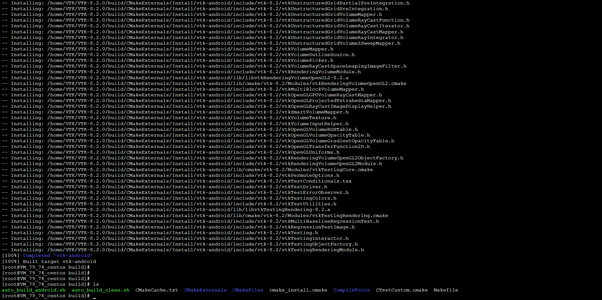
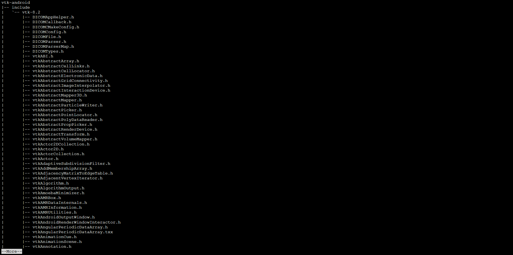
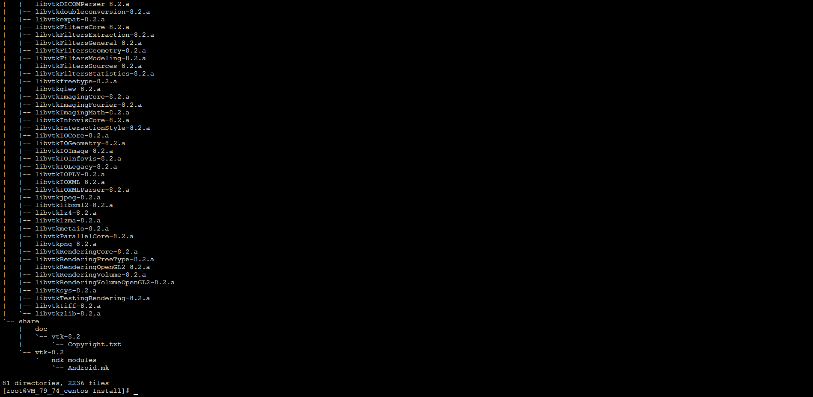
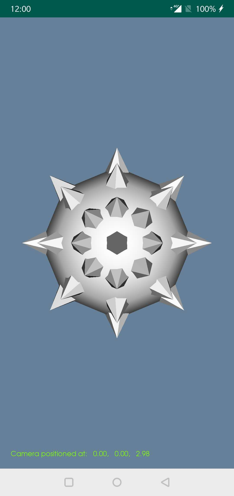

VTK Android移植和示例
1、准备工作 安装NDK Android SDK/Tools
wget https://dl.google.com/android/repository/android-ndk-r16b-linux-x86_64.zip
7za x android-ndk-r16b-linux-x86_64.zip
设置环境变量：
$] vim /etc/profile
在文件结尾增加：
export NDK_ROOT=/home/VTK/android-ndk-r16b
export ANDROID_NDK=/home/VTK/android-ndk-r16b
export ANDROID_PLATFORM_TOOL=/home/VTK/platform-tools
export ANDROID_TOOL=/home/VTK/tools
export PATH PATH=$PATH:$NDK_ROOT:$ANDROID_TOOL:$ANDROID_PLATFORM_TOOL:$GOROOT/bin:$GOPAHT/bin
如果需要Linux编译Android Demo 自行安装Android platform-tools
https://developer.android.com/studio/releases/platform-tools
去下载并安装，设置环境变量 platform-tools_r28.0.1-linux.zip
https://developer.android.com/studio/
去下载并安装，设置环境变量 sdk-tools-linux-4333796.zip
2、依赖工具 cmake mesa and xt
Install mesa and xt
yum install mesa-libGL-devel
yum install mesa-libGLU-devel
yum install libXt-devel
Install cmake
https://cmake.org/download/
download cmake-3.13.2-Linux-x86_64.sh
chmod 755 cmake-3.13.2-Linux-x86_64.sh
./cmake-3.13.2-Linux-x86_64.sh --skip-license --prefix=/usr/
3、下载VTK源码并编译
wget https://www.vtk.org/files/release/8.2/VTK-8.2.0.tar.gz
tar zxvf VTK-8.2.0.tar.gz
运行编译脚本
cd VTK-8.2.0
mkdir build
cd build
cp auto_build_clean.sh auto_build_android.sh build
./auto_build_android.sh
_编译脚本 auto_buildandroid.sh 内容
#!/bin/bash
cmake -DCMAKE_TOOLCHAIN_FILE=$NDK_ROOT/build/cmake/android.toolchain.cmake \
-DCMAKE_ANDROID_NDK=$NDK_ROOT \
-DCMAKE_VERBOSE_MAKE=ON \
-DCMAKE_SYSTEM_NAME=Android \
-DCMAKE_BUILD_TYPE=Release \
-DCMAKE_CXX_FLAGS='-std=c++11 -fpic -fexceptions -frtti' \
-DCMAKE_C_FLAGS='-fpic' \
-DCMAKE_ANDROID_STL_TYPE='c++_static' \
-DCMAKE_SYSTEM_VERSION=24 \
-DVTK_ANDROID_BUILD=ON \
-DANDROID_NATIVE_API_LEVEL=24 \
-DOPENGL_ES_VERSION=3.0 ..
cmake --build .
_清除脚本 auto_buildclean.sh 内容
#!/bin/bash
rm -rf CMakeCache.txt
rm -rf CMakeFiles
rm -rf cmake_install.cmake
rm -rf Makefile
rm -rf CTestTestfile.cmake
rm -rf CMakeExternals
rm -rf CMakeTmp
rm -rf CompileTools
rm -rf CTestCustom.cmake
rm -rf ExternalData
运行脚本中,请耐心等待
注意：遇到 vtk error: ‘round’ is not a member of ‘std’ ，则将 “std::round” 直接修改为 “round” 即可继续编译   
编译好的库目录在： ls CMakeExternals/Install/vtk-android 包括 include lib share等3个目录，分别存放头文件 库文件
创建发布库目录 cp -rf CMakeExternals/Install/vtk-android /home/VTK/
到此，库编译完成了
4、编译JavaVTK工程
源码见： https://github.com/panyingyun/vtkandroiddemo/tree/master/JavaVTK2
编译 libJavaVTK.so
cd JavaVTK2/app/src/main/cpp/
./auto_build_android.sh
编译完成后将 libJavaVTK.so 拷贝到 app/src/main/jniLibs/armeabi-v7a/下 即可使用android studio工具编译出apk APK见 https://github.com/panyingyun/vtkandroiddemo/releases/download/0.1/javavtk-debug.apk
运行截图：

详细CMakeLists.txt
cmake_minimum_required(VERSION 3.4.1)
set(CMAKE_SYSTEM_NAME Android)
set(CMAKE_SYSTEM_VERSION "24")
set(CMAKE_ANDROID_ARCH_ABI "armeabi-v7a")
set(CMAKE_ANDROID_NDK "/home/VTK/android-ndk-r16b")
set(VTK_DIR "/home/VTK/vtk-android/lib/cmake/vtk-8.2")
project(JavaVTK)
find_package(VTK REQUIRED)
include(${VTK_USE_FILE})
set(sources main.cxx)
add_library(JavaVTK SHARED ${sources})
target_link_libraries(JavaVTK android log EGL GLESv3 stdc++ ${VTK_LIBRARIES})
附录1：vtk-android库链接，如果不自己编译，可直接下载使用
https://github.com/panyingyun/vtkandroiddemo/blob/master/vtkandroid/vtk-android.tar.gz
附录2：测试APK JavaVTK.apk 下载地址
https://github.com/panyingyun/vtkandroiddemo/blob/master/vtkandroid/JavaVTK.apk
附录3：VTK编译脚本 下载地址
https://github.com/panyingyun/vtkandroiddemo/blob/master/vtkandroid/auto_build_android.sh